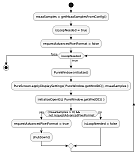

|
PURE API 0.5
PR00F's Ultimate Rendering Engine full documentation
|
|
PURE API 0.5
PR00F's Ultimate Rendering Engine full documentation
|
This page lists the 3rd party libraries used primarily by PURE.
Additional 3rd party libraries used primarily by PGE are listed in PGE's own documentation.
When choosing a 3rd party library to be used in my project, there are some general requirements that must be satisfied by the lib:
So, for example, if there is a nice image loading library, working fine but not updated since 2004, then sorry but it is a no-go for me.
Under GUI, I mean the HW-accelerated 2D graphical user interface in the rendering area, the usual elements like text, combo box, list box, buttons, etc.
I don't discuss the platform windowing here because that is elaborated in the next section.
GUI has its own sub-page within PURE documentation where I also cover the chosen library.
Note: GUI and windowing libs need to be compatible with each other because windowing libraries provide platform-independent input handling as well, and the GUI elements managed by the GUI libs take input from the windowing library's input handling.
Therefore, it is recommended to select a windowing library which is supported by your selected GUI lib, or vice versa.
To render something, PURE requires a window.
To be more detailed, a window is required by PURE not only for rendering, but also by PGE to handle user input.
Before v0.5, PureWindow had WinAPI-based implementation to create and manage such window, and using this, PGEInputHandler handled keyboard- and mouse input.
This was not platform-independent, so I decided to find a better solution.
Note: a small reminder on PURE's internal behavior on initializing OpenGL:

|
If we want MSAA, we need to select an advanced pixel format using WGL functionality. WGL functions are required to list and select advanced pixel formats which support MSAA.
However, WGL functionality is available only after we initialize OpenGL!
So in any case, first we do the following sequence of actions:
PureWindow::initialize(): create a window, to have a DC (Device Context),PureScreen::applyDisplaySettings(): apply selected display settings and for the DC we also select a regular pixel format first, or an advanced pixel format if MSAA is requested AND we have WGL functions pointers already,PureRendererHWfixedPipeImpl::initializeOpenGL(): with the DC we can create an OpenGL RC (Rendering Context) and query for some specific function pointers, including pointers to WGL functions.So at this point, if MSAA was originally requested, we do a shutdown (destroy RC, DC and window), and do the previous sequence again, but this time, we can use WGL functionality to select and apply an advanced pixel format.
Selecting and applying pixel format always happens in PureScreen::applyDisplaySettings(), but only in 2nd iteration we have access to WGL and can select an MSAA-compliant pixel format.
This explained behavior is also not platform-independent due to WinAPI usage in PureWindow and PureScreen, this shall be also handled by my selected 3rd party lib.
My requirements for windowing libraries:
I don't care about "fullscreen exclusive mode" because it is not an explicit thing, and also from Windows 10, it is automatic:
"we enhanced the DWM to recognize when a game is running in a borderless full screen window with no other applications on the screen. In this circumstance, the DWM gives control of the display and almost all the CPU/GPU power to the game. Which in turn allows equivalent performance to running a game in FSE. Fullscreen Optimizations is essentially FSE with the flexibility to go back to DWM composition in a simple manner".
[link to source]
I considered these libs:
All of them are cross-platform, widely used, and still maintained.
SDL and SFML provide much more: image file loading, audio support, networking, etc.
If you do not use any libs yet for these purposes, I recommend selecting either SDL or SFML so later you can benefit from other features too.
Otherwise GLFW might be just fine for you.
As of December 2024, all 3 libs meet the abovementioned requirements.
Some of them might not be as good as the other from screen DPI handling perspective though but at least some support is there anyway.
A small note: TGUI coincidentally also compares these 3 libs in the context of DPI awareness and MSAA.
My selected GUI library is Dear ImGui, it officially has support for SDL and GLFW, but not for SFML.
There is an unofficial repo adding SFML support to Dear ImGui though.
Note: if you use TGUI then it has support for all 3 windowing libraries though.
Android is currently NOT officially supported by GLFW (but some work is already being done).
So, from all the officially supported features, SDL seems to be the winner (for me), however I might come back to this topic in 2025 when I finally start using one of them.
Properly detecting the rendering hardware is important because based on that the engine can decide what rendering features it can use.
Features detection in OpenGL is done by parsing OpenGL extensions.
PURE v0.4 parses the supported extensions and also does an extensive per-version and per-feature check, so the user can use the PureHwVideo class to understand the capabilities of the current rendering hardware.
PURE does this by not only expecting the presence of specific extensions strings but also expecting the related function pointers and in some cases it also compares some queried values to an expected range.
Since I'm proud of this and did not see anything else similar with this level of verification (except probably GLEW), I want to keep this behavior.
BUT getting the function pointers for the extension-specific functions might need to be done in different way on desktop Windows than on Linux and on mobile devices with OpenGL ES.
For this, I also need a platform-independent solution in the form of a 3rd party lib for extension handling, and PureHwVideo will also rely on that lib and on my existing per-feature checking implementation.
I have not yet done too much study on this but the following libs came into scope so far:
GLEE is not really maintained anymore. Might be good short-term but long-term might not be enough.
PRooFPS-dd has 2 tickets that will need to be closed once this work is done: ticket 1, ticket 2.
TODO: conclude on the libs.
The other topic that is also related to rendering hardware, is the amount of video memory.
Based on this, a renderer might not use some features and can also recommend automatic downsizing of textures.
For decades, querying the total amount and the free available video memory was not possible to be done in a standard way.
DirectX has implementation for it, but OpenGL does not have.
Would be nice to find some cross-platform solution for this.
When generating logs for troubleshooting, it would be nice to better understand the client's (customer) hardware setup.
PURE v0.4 has some classes for that but these are unfinished and NOT cross-platform: PureHwAudio, PureHwCentralProcessor, PureHwSystemMemory.
I found the following libs in this topic:
Will need to do more research on this.
TODO: conclude on the libs.
Requirements for image handling libraries:
The SAIL lib lists a few competitor libs.
From this list:
So it boiled down to the following list:
TODO: conclude!
It is interesting to see none of them support DDS or KTX either (DevIL and stb support DDS but they failed on some other requirement).
For DDS support, it is ok if a given lib does not support resizing because DDS stores different MIP map levels, so downscaling can be done by simply selecting a specific MIP map level as base texture, instead of actually resizing.
For a DDS-only lib, either I can use DDS++, or worst-case I can use my own implementation I made around 2008.
Another thing to mention is ETC format [link to ETCPACK], which reminds me to the DXT compressions used in DDS files.
If this one is widely supported on OpenGL ES devices and even more preferred than DXT compressions I might need to support this as well.
TODO: conclude, but first finish the windowing section!
PURE v0.4 has its own OBJ model file parser implementation, however it still does NOT support MTL file format which is a very fundamental addition to OBJ, since OBJ can reference MTL file to describe material data.
To add MTL support, I think Stefan Johnsen's library is a good idea.
Later in the future I can also use his OBJ parser lib as well.
Since OBJ format does not store model animation, in the future I need to support another 3D model file format as well with animation.
FBX and glTF formats both support model animation and lots of other features, while they also get more and more popular nowadays.
The plan is to include parser libs for these as well in the future.
TODO: conclude on the libs.
TODO
TODO
TODO